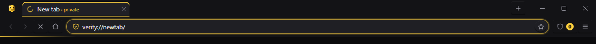
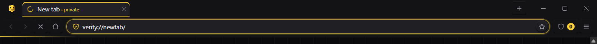
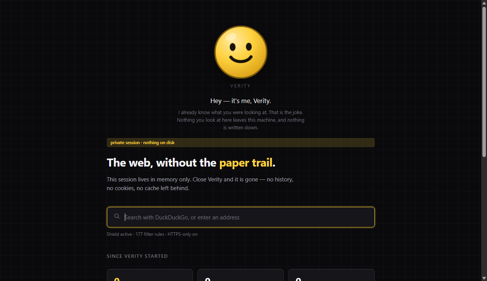

Should Verity block this host?
Rules match on a hostname suffix boundary, which is the whole difference between a filter list that works and one that breaks sites.
Waiting for a hostname.
via new Blocklist().match(host)
Verity is a desktop browser built from scratch on Electron. Nothing is tracked by default, nothing is written to disk unless you ask for it, and every privacy switch is real — it changes what the network layer does, not just what the interface says.
loading the engine…
Hey — it's me, Verity.
I already know what you were looking at. That is the joke. Nothing you look at here leaves this machine, and nothing is written down.
Type above: the address bar is the browser's own resolver, so this tells you where it would actually go.
A drawing of the window, not a screenshot — assembled from the app's own
icons.js and chrome.css at build time, so it cannot drift from the
real thing. The address bar is not a drawing: it is the browser's
resolveInput(), running in this page.
These are not re-implementations for the website. The page loads
blocklist.js and search.js — the same files the browser's main
process loads — and calls them. Whatever you see here is what Verity would do.
Rules match on a hostname suffix boundary, which is the whole difference between a filter list that works and one that breaks sites.
Waiting for a hostname.
via new Blocklist().match(host)
Paste a link with campaign junk on it. Verity strips the known tracking parameters before the request goes anywhere.
via stripTrackingParams(url) and Blocklist.match(host)
Counted in this tab, in memory, and sent nowhere — which is the only claim this page can make about itself. The rest of the engine (HTTPS upgrading, third-party cookies and storage, request headers, fingerprint surface) runs in the browser's main process and is not reproduced here.
Every protective option ships switched on. The list below is the engine as the code has it, not as a store page would put it.
A privacy page that only lists wins is a page you should not believe. So, plainly:
Written by npm run capture into artifacts/ and copied here at build
time. Two of them are the chrome strip; the third is the new tab page.



There is deliberately no full-window screenshot. The page surface and the side panel are separate Chromium views, and on this desktop a window capture does not include their pixels — the project reports that as a limit rather than shipping a blank image as evidence. The panel is verified by view geometry, visibility and DOM content against a real window instead, and the drawing at the top of this page exists for the same reason.
| Command | What it covers |
|---|---|
npm run smoke |
39 headless checks: the rule engine, omnibox resolution, session isolation, request filtering against a local fixture server, cookie and header handling, HTTPS-only and its exceptions, tab lifecycle, the error interstitial, every panel's DOM driven through its own view, the mascot everywhere it belongs, the panel following a live theme change, and the profile argument refusing to be tricked out of its directory. |
npm run diagnose |
5 checks against a real, visible, composited window: strip geometry, palette
resolution, panel view placement, and findInPage with real match counts.
|
npm run capture |
The screenshots above, for human review. |
npm run verify |
Both suites together. |
A check that cannot run is reported as a skip, never as a pass. findInPage
returns nothing to a software-composited window that never composited, so the smoke suite
skips it and the diagnose suite proves the same flow against a real window.
Requires Node 20+ and a desktop session — the browser renders real Chromium.
There is no published release yet, so there is nothing to download from here: the installer is built on your own machine by the command above. It is also not code-signed, so Windows will warn on first run, and it installs per user — it never needs administrator rights.
The interface is only a view of it. Two view-level facts are worth knowing before reading the code, because both look like bugs until you know why:
BrowserWindow.fromWebContents.
The IPC gateway resolves a sender by view identity and origin, so exactly two
documents can drive a window: verity://chrome and verity://panel.
A web page never gets a bridge at all.
This page is built the same way the icon is: tools/build-site.js lifts the mascot
from icons.js, the palette from chrome.css and the engine from
blocklist.js, then reloads what it wrote and compares it against the app across
72 probe cases. A rotted copy fails the build.